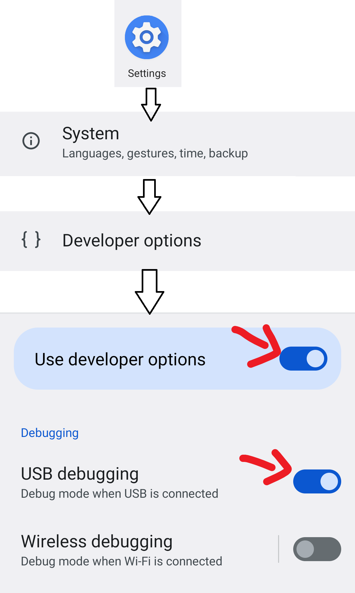
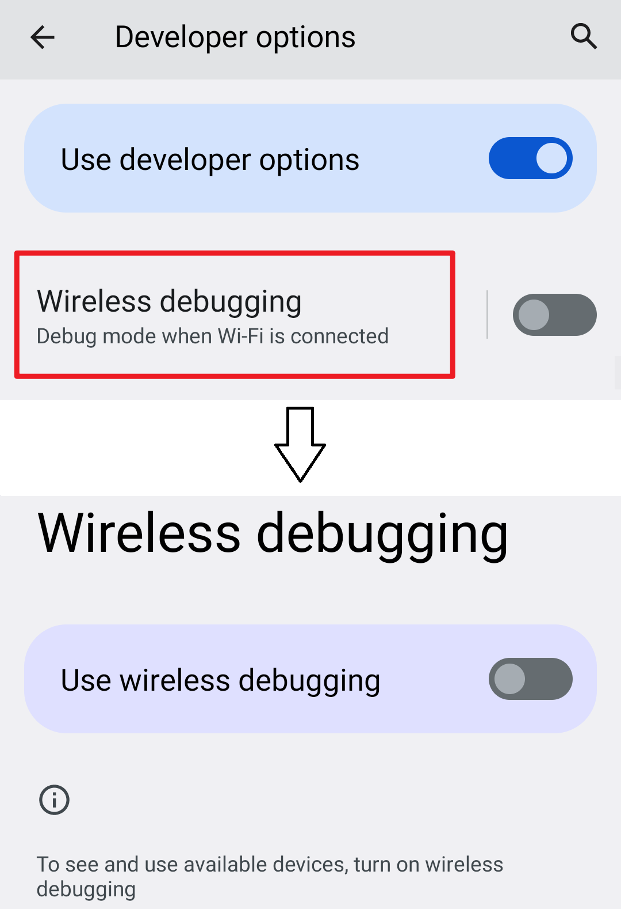
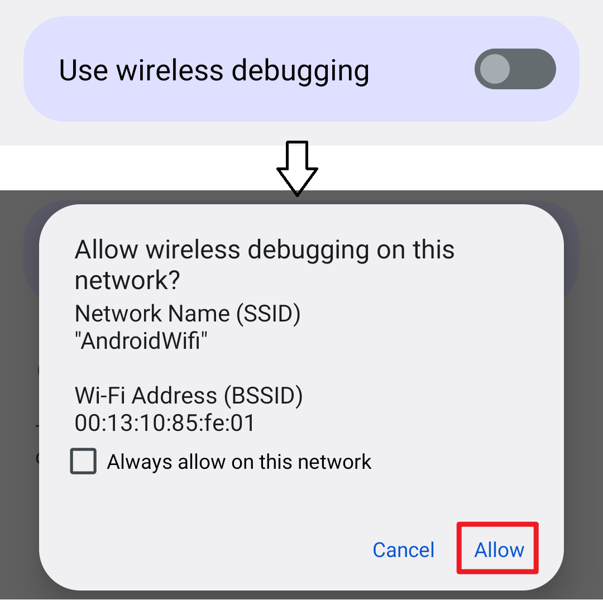
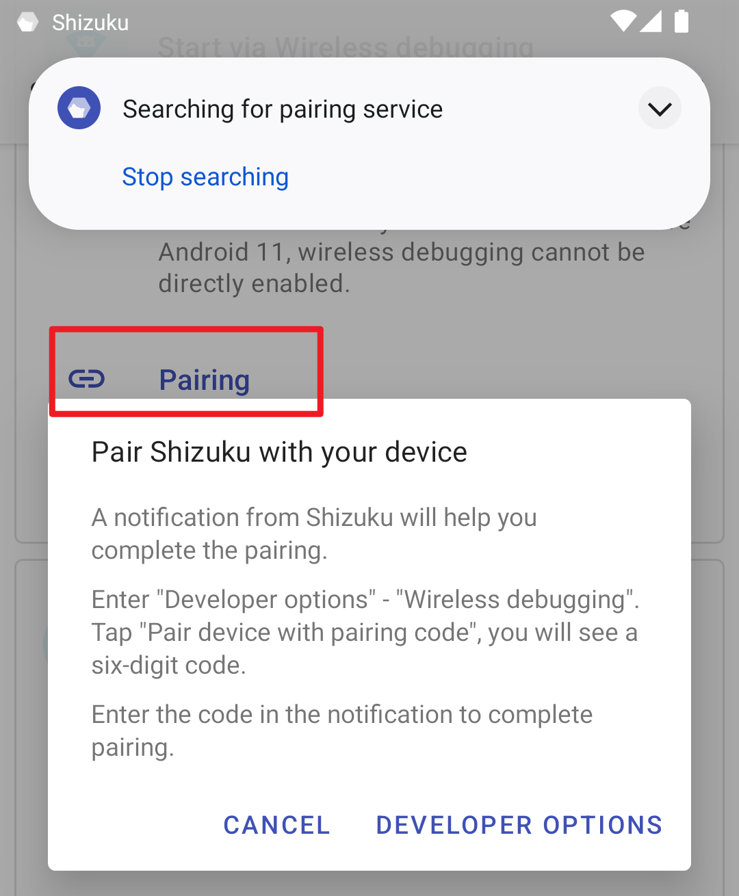
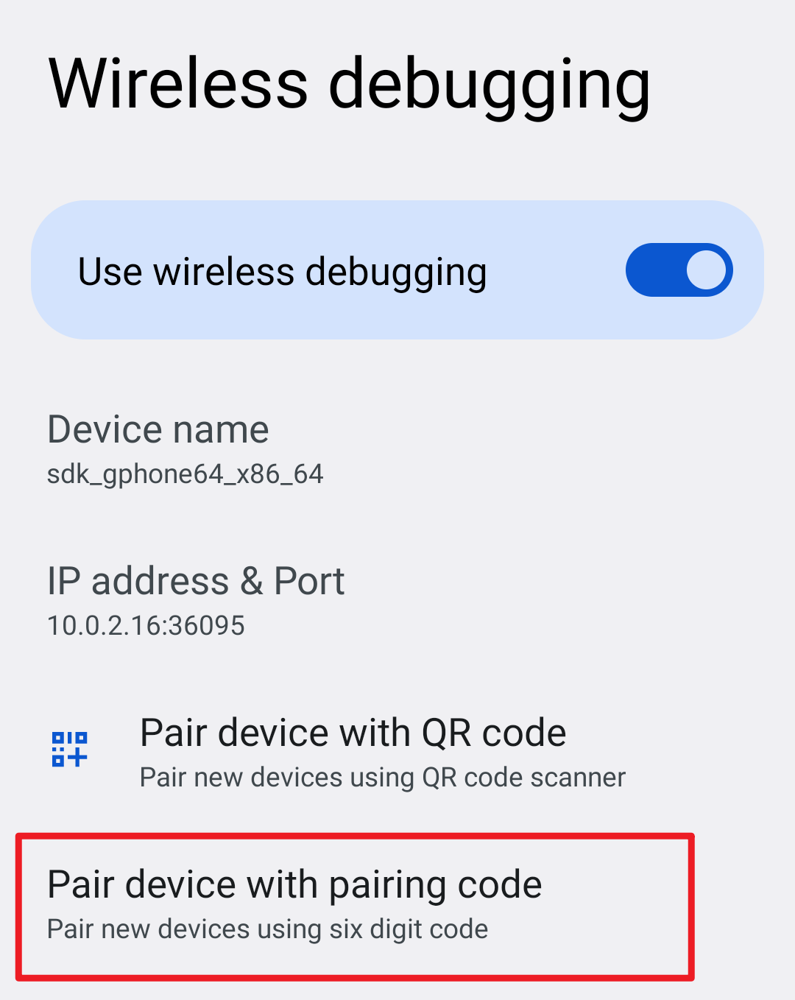
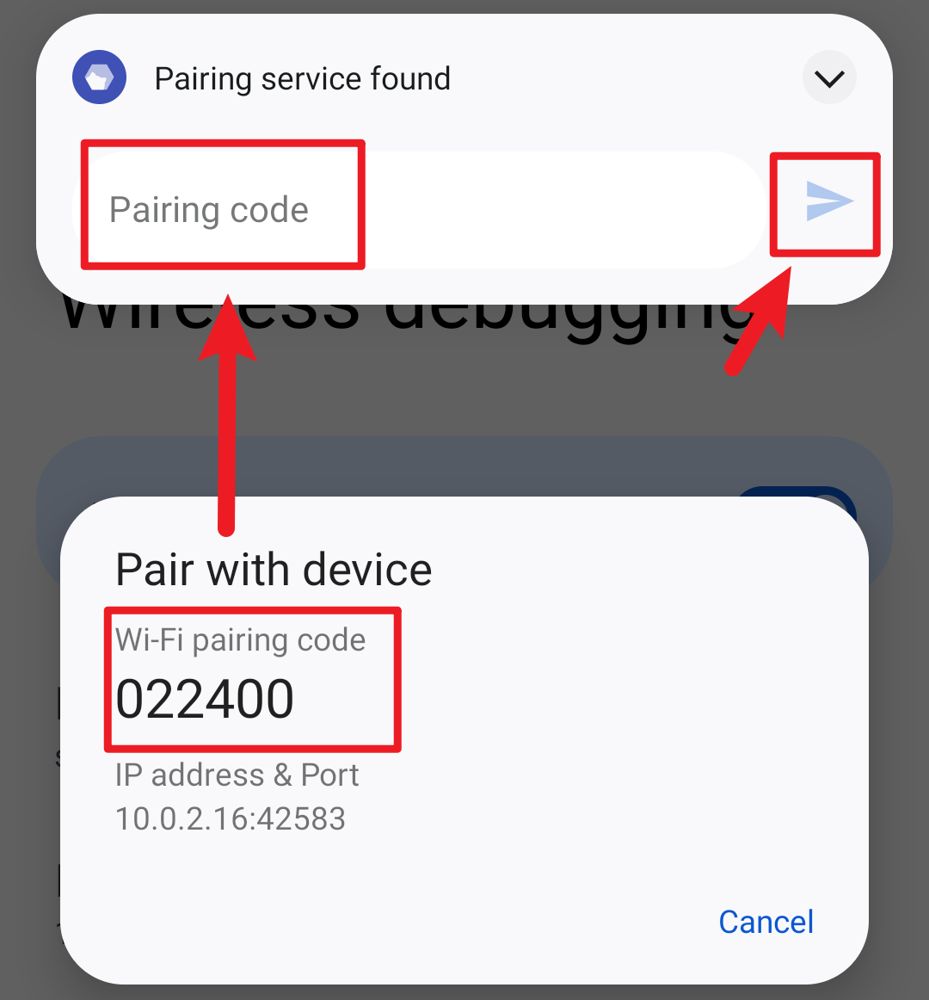
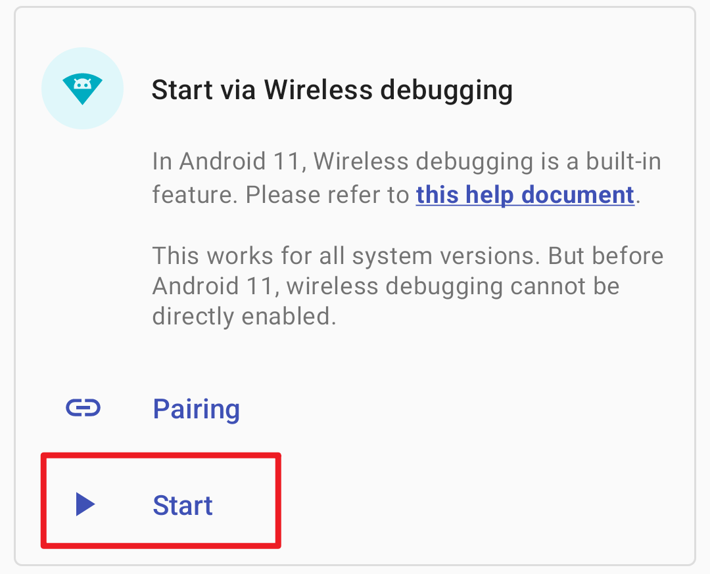

# 用户手册
# 启动 Shizuku
Shizuku 支持通过以下三种方式启动。
# 通过 root 启动
如果您的设备已经 root，直接启动即可。
# 通过无线调试启动
通过无线调试启动适用于 Android 11 或以上版本。这种启动方式无需连接电脑。由于系统限制，每次重新启动后都需要再次进行启动步骤。
# 启用无线调试
- 在网络上搜索如何为您的机型启用“开发者选项”
- 启用“开发者选项”和“USB 调试”

- 进入“无线调试”

- 启用“无线调试”

# 配对（仅需一次）
- 在 Shizuku 内开始配对

- 启用无线调试
- 点按“无线调试”中的“使用配对码配对设备”

- 在 Shizuku 的通知中填入配对码

# 启动 Shizuku

如果无法启动，尝试禁用并启用无线调试。
# 通过连接电脑启动
该启动方式适用于未 root 且运行 Android 10 及以下版本的设备。很不幸，该启动方式需要连接电脑。由于系统限制，每次重新启动后都需要再次进行启动步骤。
# 什么是 adb？
Android 调试桥 (adb) 是一个通用命令行工具，其允许您与模拟器实例或连接的 Android 设备进行通信。它可为各种设备操作提供便利，如安装和调试应用，并提供对 Unix shell（可用来在模拟器或连接的设备上运行各种命令）的访问。
更多信息请查看 Android Developer (opens new window)。
# 安装 adb
下载由 Google 提供的“SDK 平台工具”并解压至任意文件夹
打开文件夹，右键选择
- Windows 10：在此处打开 PowerShell 窗口（需要按住 Shift 才会显示该选项）
- Windows 7：在此处打开命令行窗口（需要按住 Shift 才会显示该选项）
- Mac 或 Linux：打开 Terminal（终端）
输入
adb如果可以看到一长串内容而不是提示找不到 adb 则表示成功
提示
- 请不要关闭该窗口，后面提到的“终端”都是指此窗口（如果关闭请重新进行第 2 步）。
- 如果使用 PowerShell 或是 Linux 及 Mac，所有
adb都要替换成./adb。
# 设置 adb
要使用 adb 你首先需要在设备上打开 USB 调试功能，通常需要经过以下步骤：
- 打开系统设置，进入关于
- 连续数次点击 "Build number" 后看到类似 "You are a developer" 的提示
- 此时你应该可以在设置中找到“开发者选项”，进入后开启“USB 调试”
- 连接设备到电脑，在终端中输入
adb devices - 此时设备上会出现“是否允许调试”的对话框，勾选“总是允许”后确认
- 再次在终端中输入
adb devices，如无问题将会看到类似如下内容List of devices attached XXX device
TIP
不同设备开启“开发者选项”的步骤可能有所不同，请自己搜索。
# 启动 Shizuku
复制指令并粘贴到终端中，如无问题你将会在 Shizuku 中看到已启动成功。
适用于 Shizuku v11.2.0+ 的指令
adb shell sh /sdcard/Android/data/moe.shizuku.privileged.api/start.sh
# 常见问题
许多厂商对 Android 系统进行了修改，这会造成 Shizuku 无法正常工作。
# 通过无线调试启动：一直显示“正在搜索配对服务”
请允许 Shizuku 在后台运行。
搜索配对服务需要访问本地网络，许多厂商在应用不可见后立刻禁止应用访问网络。您可以在网络上搜索如何在您的设备上允许应用在后台运行。
# 通过无线调试启动：点击“输入配对码”后立刻提示失败
# MIUI（小米、POCO）
在系统设置的“通知管理”-“通知显示设置”将通知样式切换为“原生样式”。
# 通过无线调试启动/通过连接电脑启动：adb 权限受限
# MIUI（小米、POCO）
在“开发者选项”中开启“USB 调试（安全设置）”。注意，这和“USB 调试”是两个分开的选项。
# ColorOS（OPPO & OnePlus）
在“开发者选项”中关闭“权限监控”。
# Flyme（魅族）
在“开发者选项”中关闭“Flyme 支付保护”。
# 通过无线调试启动/通过连接电脑启动：Shizuku 随机停止
# 所有设备
保证 Shizuku 可以在后台运行。
不要关闭“USB 调试”及“开发者选项”。
在“开发者选项”中将 USB 使用模式改为“仅充电”。
在 Android 8 上的选项是“选择 USB 配置”-“仅充电”。
在 Android 9 及以上版本上选项是“默认 USB 配置”-“不进行数据传输”。
（Android 11+）启用“停用 adb 授权超时功能”选项
# EMUI (华为)
在“开发者选项”中开启「“仅充电”模式下允许 ADB 调试选项」。
# MIUI（小米、POCO）
不要使用“手机管家”的扫描功能，因为它会禁用开发者选项。
# Sony
不要点击连接 USB 后弹出的对话框，因为这会导致 USB 使用模式发生变化。
# 通过 root 启动：无法开机启动
请允许 Shizuku 在后台运行。